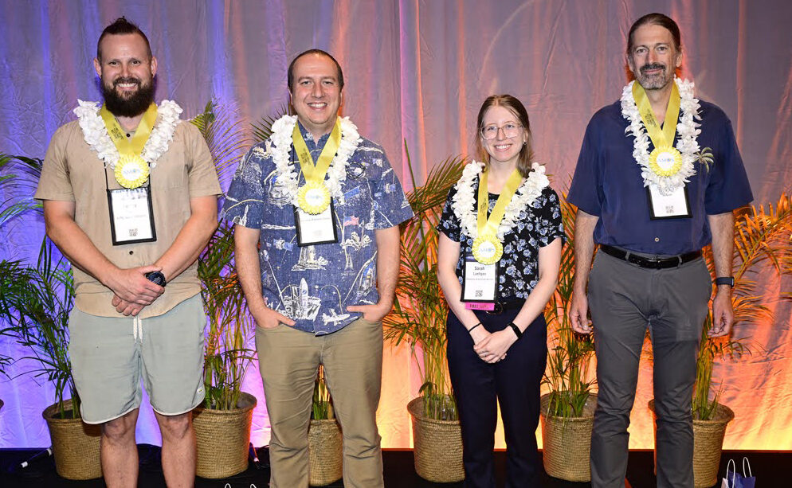
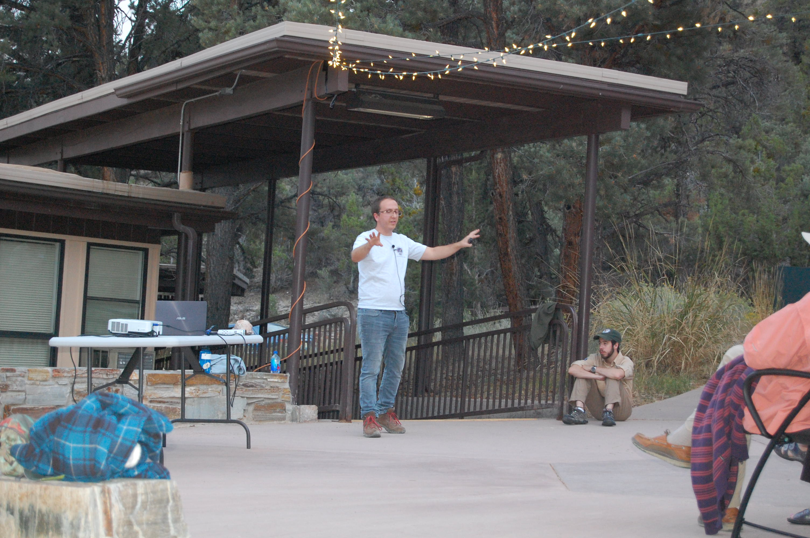

Research
Contents :
Academic Curriculum Vitae
Research Interests
Research Experience
Awards
Publications
Proceedings
Presentations
Awarded Grants and Contracts
Mentoring
Service and Outreach
Media Coverage
Academic
Curriculum Vitae
Academic CV:
Google Scholar Page
NASA ADS Page
Research Interests
Research interests at NSI include:
Sensors and Sensing:
- Image collection, processing, and analysis over many spectral regimes (visible, infrared, ultraviolet, multispectral, hyperspectral)
- Expeditionary low SWAP sensor systems for situational awareness
- Target signature phenomenologies
Mission Data Processing:
- Signal, image, and video processing
- Feature extraction and exploitation
- Algorithm development for dim object detection and disparate data fusion for object tracking and state estimation
- Event and target detection, tracking, and characterization
- Multi-sensor and Multi-modal upstream data fusion
- Machine learning for automatic target recognition
- Stochastic process modeling
- Anomaly detection
- Physics‐informed machine learning
Trusted Autonomy:
- Autonomous decisions for proliferated, distributed, and decentralized systems
- Battle management architectures
- Killchain or threat decomposition
- Course of action recommendation
- Hostillity and intent assessment
- Risk assessment and management
- Data provenance and validation
Research Experience
Space Domain Awareness Research Lead
August 2022 — Present
Data Exploitation Lab for Trusted Autonomy
Center for National Security Initiatives (NSI)
University of Colorado Boulder
- Leading the Data Exploitation Lab for Trusted Autonomy (DELTA) research group, a multidisciplanary group focused on applied physics, mathematics, and computer science for mission data processing for SDA, MWD, and ISR. Current group is composed of 2 post doctoral research associates and 4 students.
- Led many multi‐disciplanary DoW and IC proposal efforts as CU Principal Investigator. Awarded $1.87M in funding efforts and proposals.
- Leading applied research projects in the USSF Space Systems Command (SSC) Boulder and Space Domain Awareness (SDA) Tools, Applications, and Processing (TAP) Labs.
- Selected for the inaugural Project Apollo Technology Accelerator cohort of the SDA TAP Lab. Continued participation up to present, Cohort 9. Developed and successfully tested a unrestricted operational capability for detection of launchs using publicly avaible weather satellite imagery. Capability is named Open‐data Weather imagery Launch Alerts and Tracklets (OWLAT).
- Selected as a fellow for the AFOSR Summer Faculty Fellowship Program and invited perform impactful research at the AFRL Information Directorate (AFRL/RI).
Remote Sensing Research
January 2021 — August 2022
APEX, Advanced Programs and Exploitations
Lockheed Martin Space Systems
- Developed innovative algorithms which improved the efficiency and accuracy in signal and image processing for a variety of sensor types (visible, infrared, multispectral, and RF). Developed data fusion algorithm for object detection, tracking, and state estimation.
- Designed novel machine learning networks for super resolution, image‐to‐image translation, and style transfer with Generative Adversarial Networks (GANs), image segmentation with UNETs and FCNs, and object classification with Convolution Neural Networks (CNNs).
- Improve methods for synthetic radiometric scene generation to enhance fidelity of an optical payload simulation.
- Selected as a Lockheed Martin Recognized Technical Talent for technical contributions within first year.
- Generated intellectual property which provided technical advantage for many applications and was therefore awarded and protected as a trade secret.
Cosmic Ray Research
2014 — 2020
Telescope Array Cosmic Ray Observatory
University of Utah, Department of Physics and Astronomy, Institute of High Energy Astrophysics
Research Advisor: Douglas Bergman
Thesis: Observation of the GZK Suppression with the Telescope Array Fluorescence Telescope and Deployment of the Telescope Array Expansion
Thesis Defense Slides: pptx pdf
- Analyzed 10 years of UV fluorescence event data to calculate a cosmic ray energy spectrum. Raw cosmic ray event data were analyzed by reconstructing event geometry and energy. The event information was aggregated into a large database to produce the event energy distribution. The aperture of the optical detectors was calculated through simulating cosmic events in the atmosphere and simulating the response of the detectors.
- Analyzed the significance of the Greisen–Zatsepin–Kuzmin (GZK) Suppression at the highest energies of cosmic rays in the 10 year cosmic ray spectrum. Analyzed other features that give insight into cosmic ray populations or propagation effects.
- Analyzed the preliminary data from the new fluorescence detectors for the expansion of TA known as TAx4 into a preliminary Cosmic Ray Energy Spectrum and compared to previous results to gauge the new detector’s abilities.
- Classified weather over TA with the fluorescence detector photomultiplier tube baselines to create false color logos of the detectors’ field of view. Videos of these snapshots were then used as inputs in a Recurrent Convolu on Neural Network (RCNN) model constructed with Keras machine learning framework to determine clear weather data for further cosmic ray analysis.
- Created composite satellite maps in Python with site geographic information overlays of TA using data from the Landsat 8 satellite pulled from Amazon Web Services. Created topographical and shaded relief maps in Python with site geographic information overlays using Shuttle Radar Topography Mission data (SRTM).
- Built, tested, and deployed the new fluorescence detectors in TAx4.
- Field team leader charged with the safety of field crew and overseeing the deployment of the new surface detectors to their field site for TAx4.
- Maintained and operated surface and fluorescence detectors for cosmic ray event data collection.
- Analyzed fluorescence detector’s sensitivity to energy and development of cosmic ray event interactions in the atmosphere through Monte Carlo simula on. The reconstructed event information were analyzed by being binned into histograms and fitted using ROOT data analysis framework.
- Linux systems administrator of the Telescope Array’s data server and computational clusters at the University of Utah for 2 years.
Nano Fabrication Research
2011 — 2012
Michigan Technological University, Department of Physics
Research Advisor: Yoke Khin Yap
- Analysed growth parameters for Boron Nitride Nanotubes and Vertically Aligned Multi-Walled Carbon Nanotubes in a Chemical Vapor Deposition method.
- Adapted Chemical Vapor Deposition synthesis method to a scanning thermal source for greater growth yield.
Awards
Advanced Maui Optical and Space Surveillance Technology Conference (AMOS) Best PosterSept 2025
AFOSR Summer Faculty Fellowship ProgramSummer 2023
Recognized Technical Talent, Lockheed MartinSelected 2021
Departmental Scholar, Department of Physics, Michigan Technological University2013
Sigma Pi Sigma, Physics Honor SocietyInducted 2013
Michigan Space Grant Consortium Recipient2012

2025 AMOS Best Poster Award (Image Credit: MEDB)
Publications
Time‐resolved leader spectra of downward Terrestrial Gamma‐ray Flashes observed at the Telescope Array Surface Detector, N. Kieu et al., Journal of Geophysical Research: Atmospheres, 130, e2025JD043812, 2025, https://doi.org/10.1029/2025JD043812
Intermediate fluence downward terrestrial gamma-ray flashes as observed by the Telescope Array Surface Detector, Abbasi, R. et al., Journal of Geophysical Research: Atmospheres, 129, e2024JD041260, 2025, https://doi.org/10.1029/2024JD041260
First Time-Resolved Leader Spectra Associated With a Downward Terrestrial Gamma-Ray Flash Detected at the Telescope Array Surface Detector, N. Kieu et al., Journal of Geophysical Research: Atmospheres, 129, e2024JD041720, 2024, https://doi.org/10.1029/2024JD041720
Mass composition of ultrahigh energy cosmic rays from distribution of their arrival directions with the Telescope Array, R.U. Abbasi et al. (The Telescope Array Collaboration), Phys. Rev. Lett., 110, 022006, 2024, doi: 10.1103/PhysRevD.110.022006
An extremely energetic cosmic ray observed by a surface detector array, R.U. Abbasi et al. (The Telescope Array Collaboration), Science, 382, 2023, doi: 10.1126/science.abo5095
The energy spectrum of cosmic rays measured by the Telescope Array using 10 years of fluorescence detector data, R.U. Abbasi et al. (The Telescope Array Collaboration), Astropart. Phys., 151, 2023, doi: 10.1016/j.astropartphys.2023.102864
Infrared Small Target Detection Enhancement Using a Lightweight Convolutional Neural Network, M. Gupta, J. Chan, M. Krouss, G. Furlich, P. Martens, M. Chan, M. L. Comer, E. J. Delp, IEEE Geoscience and Remote Sensing Letters, vol. 19, pp. 1-5, 2022.
Search for Spatial Correlations of Neutrinos with Ultra-high-energy Cosmic Rays, A. Albert et al. (The ANTARES Collaboration, the IceCube Collaboration, the Pierre Auger Collaboration, and the Telescope Array Collaboration), 2022 ApJ 934 164. DOI 10.3847/1538-4357/ac6def
Observation of variations in cosmic ray single count rates during thunderstorms and implications for large-scale electric field changes, R. U. Abbasi et al. (The Telescope Array Collaboration), Phys. Rev. D 105 164, 2022. DOI: 10.1103/PhysRevD.105/062002
The Cosmic-Ray Composition between 2 PeV and 2 EeV Observed with the TALE Detector in Monocular Mode, R. U. Abbasi et al. (The Telescope Array Collaboration), 2021 ApJ 909 178. DOI 10.3847/1538-4357/abdd30
Measurement of the proton-air cross section with Telescope Array’s Black Rock Mesa and Long Ridge fluorescence detectors, and surface array in hybrid mode, R. U. Abbasi et al. (The Telescope Array Collaboration), Phys. Rev. D 102, 062004, 2020. DOI: https://doi.org/10.1103/PhysRevD.102.062004
Evidence for a Supergalactic Structure of Magnetic Deflection Multiplets of Ultra-high-energy Cosmic Rays, R. U. Abbasi et al. (The Telescope Array Collaboration), 2020 ApJ 899 86, 2020. DOI 10.3847/1538-4357/aba26c
Search for Ultra-High-Energy Neutrinos with the Telescope Array Surface Detector, R. U. Abbasi et al. (The Telescope Array Collaboration), J. Exp. Theor. Phys. 131, 255–264 (2020). https://doi.org/10.1134/S106377612005012X
Observations of the Origin of Downward Terrestrial Gamma-Ray Flashes, JW Belz et al., Journal of Geophysical Research: Atmospheres, 125, e2019JD031940, 2020. https://doi.org/10.1029/2019JD031940
Constraints on the diffuse photon flux with energies above 1018 eV using the surface detector of the Telescope Array experiment, R.U. Abbasi et al. (Telescope Array Collaboration), Astropart. Phys. 110 (2019) https://doi.org/10.1016/j.astropartphys.2019.03.003
Testing a Reported Correlation between Arrival Directions of Ultra-high-energy Cosmic Rays and a Flux Pattern from nearby Starburst Galaxies using Telescope Array Data, R.U. Abbasi et al. (Telescope Array Collaboration), ApJ. 867 2 (2018) DOI 10.3847/2041-8213/aaebf9
The Cosmic-Ray Energy Spectrum between 2 PeV and 2 EeV Observed with the TALE detector in monocular mode, R.U. Abbasi et al. (Telescope Array Collaboration), ApJ. 865 74 (2018)
Evidence of Intermediate-scale Energy Spectrum Anisotropy of Cosmic Rays E ≥ 1019.2 eV with the Telescope Array Surface Detector, R.U. Abbasi et al. (Telescope Array Collaboration), ApJ. 862 91 (2018)
Depth of Ultra High Energy Cosmic Ray Induced Air Shower Maxima Measured by the Telescope Array Black Rock and Long Ridge FADC Fluorescence Detectors and Surface Array in Hybrid Mode, R.U. Abbasi et al. (Telescope Array Collaboration), ApJ. 858 76 (2018)
Gamma-ray Showers Observed at Ground Level in Coincidence With Downward Lightning Leaders, R.U. Abbasi et al. (Telescope Array Collaboration), Journal of Geophysical Research: Atmospheres 123 (2018)
Conference Proceedings and Non-reviewed Publications
A spatial-spectral convolutional neural network for dim, unresolved target detection in multispectral imagery, B Sweeney, G Furlich, S Rossland, M W Chan, S Kerner, SPIE Defense + Security, 2026, Accepted
Data-driven chromaticity-space rotations for enhanced target detection in multispectral overhead imagery, S Rossland, G Furlich, M W Chan, S Kerner, SPIE Defense + Security, 2026, Accepted
In-transit space object recognition via physics-based remote sensing, B Joens, K Miller, G Furlich, A Shirkhodaie, J Christopher, V Sheffey, SPIE Defense + Security, 2026, Accepted
Multi-modal physics simulation for space launch vehicle awareness and monitoring, B Joens, K Miller, G Furlich, A Shirkhodaie, J Christopher, V Sheffey, SPIE Defense + Security, 2026, Accepted
Utilizing Civilian Launches as Live Exercises for Evaluating a Federated Protect and Defend SDA Battle Management System, G. Furlich et al., 2025 Advanced Maui Optical and Space Surveillance Technology Conference (AMOS) (Best Poster Award)
Towards an AI-enabled Space Battle Management System on Space Protocol's Quantum Resilient Blockchain, Latif, Yasir ; Bagchi, Samya ; Madhuri Pratti, Latha ; Reed, Harvey ; Stilwell, Ruth ; Furlich, Greg, 2025 Advanced Maui Optical and Space Surveillance Technology Conference (AMOS)
Automated, Collaborative Applications to Close Kill Chain Gaps, G. Furlich et al., 2024 Advanced Maui Optical and Space Surveillance Technology Conference (AMOS)
SubPixel Localization of Objects Using Multiple Spectral Bands, M. Gupta, J. Chan, M. Krouss, G. Furlich, P. Martens, M. Chan, M. L. Comer, E. J. Delp, IEEE Aerospace Conference, 2022
Recent measurement of the Telescope Array energy spectrum and observation of the shoulder feature in the Northern Hemisphere, D. Ivanov, D. Bergman, G. Furlich, R. Gonzalez, G. Thomson and Y. Tsunesada, Proceedings of Science 395 (ICRC2021), 341, 37th International Cosmic Ray Conference, Berlin, Germany, July 2021
Telescope Array 10-Year Monocular Spectrum , Douglas Bergman, Greg Furlich, Proceedings of Science 395 (ICRC2021), 339, 37th International Cosmic Ray Conference, Berlin, Germany, July 2021
Telescope Array FD Weather Classification using Machine Learning, Greg Furlich, Proceedings of Science 358 ICRC2019, 261, 36th International Cosmic Ray Conference, Madison, WI, July 2019
Towards a Telescope Array 10 Year FD Monocular Energy Spectrum, Greg Furlich, Douglas Bergman, Proceedings of Science 358 (ICRC2019), 260, 36th International Cosmic Ray Conference, Madison, WI, July 2019
Increasing the Yield of Boron Nitride Nanotubes in a CVD Method, Greg Furlich, Michigan Space Grant Consortium, Michigan in Space 14 (2012)
Presentations
Data Exploitation for Space Domain Awareness Mission Data Processing, AES Department Seminar, University of Colorado Boulder, Boulder, CO, January 2026
Open-data Weather imagery Launch Alerts and Tracklets, AFRL Blank Space Talk, Virtual, January 2026
AMOS Encore, Expert Talk, SDA TAP Lab, January 2026
Defeating Emerging Threats with Advanced Algorithms, United States Space Command (USSPACECOM) Academic Engagement Enterprise (AEE), Colorado Springs, CO, April 2024
Multi-spectral Object Detection Algorithms, Joint Algorithm Workshop, Lockheed Martin, Orlando, FL, April 2022
Observation of the GZK Suppression with the Telescope Array Fluorescence Telescopes and Deployment of the Telescope Array Expansion, Thesis Defense, University of Utah, April 2020
Weather Classification using Machine Learning at the Telescope Array Cosmic Ray Observatory, APS April Meeting, Denver, CO, April 2019
Weather Classification using Machine Learning at the Telescope Array Cosmic Ray Observatory (Poster), Department of Physics and Astronomy Annual Symposium, University of Utah, Salt Lake City, UT, April 2019
Machine Learning Weather Classification with Fluorescence Detector Pedestal Data at the Telescope Array Cosmic Ray Observatory, APS Four Corners Meeting, University of Utah, Salt Lake City, UT, Oct. 2018
Machine Learning Weather Classification with Fluorescence Detector Pedestal Data at the Telescope Array Cosmic Ray Observatory, Graduate Research Seminar, University of Utah, Salt Lake City, UT, Oct. 2018
Dark Nights and Desert Air: Understanding the Highest Energy Particles in the Universe, Great Basin Astronomy Festival, Great Basin National Park, NV, Sept. 2018
TAx4 Fluorescence Detection (Poster), Physics and Astronomy Symposium, University of Utah, Salt Lake City, UT, April 2017
Hosting Your Own Website from Home with a Raspberry Pi, Graduate Research Seminar, University of Utah, Salt Lake City, UT, Oct. 2017
Once More Unto the Breach: Advice from a Physics graduate Student, Physics Seminar, Weber State University, Ogden, UT, Feb. 2017
Peer Mentoring: Training and Supporting Physics TAs at the University of Utah (Poster), AAPT Idaho-Utah Section Meeting, Pocatello, ID, April 2016
Preliminary Search for Exotic Events in the Pierre Auger Cosmic Ray Observatory Data, Physics Senior Research Oral Presentations, Michigan Technological University, Houghton, MI, April 2014
Awarded Grants and Contracts
Received 19 Awards: $ 1.87 M total funding, 11 unique awards, 9 extensions, with awards from over 10 sponsors.
Lockheed Martin Space Systems IRAD Extension V, PI, $99,000Jun 2026
Multi-modal Dim Object Detection
Lockheed Martin Space Systems IRAD Extension IV, PI, $40,000Dec 2025
Multi-modal Dim Object Detection
Lockheed Martin Space Systems IRAD Extension III, PI, $10,000Dec 2025
Multi-modal Dim Object Detection
SDA TAP Lab Cohort Award Extension II, Institutional PI $80,000Aug 2025 — Dec 2025
Prime: InTrack Radar Technology
Open-Source Launch Detection
Aerospace Corporation Award Extension, PI, $90,000Sept 2025 — Aug 2026
SDA TAP Lab Student Projects
SDA TAP Lab Cohort Award, Institutional PI $25,000Mar 2025 — Mar 2026
Prime: GTC Analytics
Open-Source Launch Detection
SDA TAP Lab Cohort Award, Institutional PI, $28,000Jun — Aug 2025
Crimson Shock: SWIR Expeditionary SDA
Lockheed Martin Space Systems IRAD Extension II, PI, $99,000Dec 2024
Multi-modal Dim Object Detection
Lockheed Martin Space Systems IRAD Extension I, PI, $50,000Dec 2024
Multi-modal Dim Object Detection
SDA TAP Lab Cohort Award Extension I, Institutional PI $80,000Oct 2024
Prime: InTrack Radar Technology
Open-Source Launch Detection
DoD USAF SBIR SF243-D003, Institutional PI, $38,600Oct 2024
SDA Target Detection and Characterization using WFOV Staring Data
AFRL ML-RCP POA-24-RV-001, Institutional PI, $40,000Aug 2024 — Aug 2026
Grant Institution: Ohio State University, Partner Institution: Tennessee State University
Multimodality Sensor Data Synthesis and Fusion for Improved Space Domain Awareness (SDA)
AFX24D PTS01 STTR, Institutional PI $33,000May — June 2024
Prime: Exclosure
Highest Revisit Frequency Space Situational Awareness Observatory
SDA TAP Lab Cohort Award, Institutional PI, $30,000Jun — Aug 2024
Prime: InTrack Radar Technology
Open-Source Launch Detection
Aerospace Corporation Award, PI, $80,000Sept 2024 — Aug 2025
SDA TAP Lab Student Projects
Lockheed Martin Space Systems IRAD, PI, $50,000Dec 2024
Multi-modal Dim Object Detection
NSTXL OTA # FA8814-21-9-0001, Institutional PI $968,000Apr 2023 — Mar 2027
Prime: Lockheed Martin Space Systems
Overhead Persistent Infrared Data Exploitation Technology Transition, OPIR ODETT
Information Institute Visiting Faculty Research Program Extension, PI $10,000Oct 2023
Orbit-to-Tracklet Track-before-Detect Algorithm Development Extension
AFOSR Summer Faculty Fellowship Program, PI $24,240June — Sept 2023
Orbit-to-tracklet Hypothesis Constraints to Frame Shifting in a Track-Before-Detect
Method for Wide Field of View Survey Telescopes
Mentoring
Research Mentor, University of Colorado Boulder
Ike Olelewe, AES PhD Student2025 — Present
Transformer-based Time Sequence Characterization
Skye Crocker, Data Science Masters Student2025 — Present
Multi-spectral Launch Detection with Weather Satellite Imagery
Copeland Laris, Data Science Masters Student2025 — Present
Foreign Launch Detection with Weather Satellite Imagery
Tanner Gill, AES Masters Student2025 — Present
RSO Characterization with Transformers
Hank Rains, AES Masters Student2024 — 2025
Similarity-based Clustering
Tim Behrer, AES Masters Student, Graduated Spring 20252024 — 2025
CNNs for Launch False Detection Control
Pranav Chopdekar, Data Science Masters Student2024
Multi-spectral Object Detection
Joanna Wang, Computer Science Masters Student, Graduated Spring 20252024
Multi-Modal Object Detection Algorithms
Research Mentor, Lockheed Martin
Mridul Gupta, Purdue University Electrical and Computer Engineering, Defended PhD 20232021 — 2022
Thesis Advisor: Ed Delp, Video and Image Processing Laboratory (VIPER)
Sub-pixel localization and multispectral signal processing
United States Military Academy Cadet2022
Synthetic Image Generation Explainability
United States Military Academy Cadet2021 — 2022
Machine learning cloud segmentation in satellite imagery
Service and Outreach
Center for National Security Initiatives, University of Colorado Boulder
Organizer, Seminar Series2023 — 2024
Academic Senate, University of Utah
Member, Graduate Assembly Ad Hoc Committee2019
College of Science, University of Utah
Member, College of Science Council2017 — 2018
Member, College of Science Curriculum Committee2017 — 2018
Member, College of Science College Student Council2017 — 2018
Department of Physics and Astronomy, University of Utah
Chair, Graduate Student Advisory Council2017 — 2018
Member, Graduate Student Advisory Council2015 — 2019
Science Outreach
Volunteer, Physics Open House, Weber State University2017, 2018, 2019
Volunteer, Science Open House, University of Utah 2017, 2019
Volunteer and Speaker, Great Basin Astronomy Festival, Great Basin NP2018
Society of Physics Students, Michigan Technological University Chapter
Treasurer2012 — 2013

I was invited to give a public talk about the Telescope Array Cosmic Ray Observatory and my research during the 2018 Great Basin Astronomy Festival (pictured above). 120 people attended!
(Image Credit: Kiley Spirito)
National Security, Space, and Academia with Dr Greg Furlich and Dr Angie Crews, T3 Talks, Innovation Hub, Virginia Tech Applied Research Corporation (VTARC), Podcast, March 16, 2026
Best Poster Award announced in The 2025 AMOS Conference Highlights Collaboration and Partnerships, Maui Economic Development Board, amostech.com, October 10, 2025
The Data Science Innovation Hub Powering the U.S. Space Force’s Digital Defenses, Autonomy Global, Dawn Zoldi, August 27, 2025
Space Force Turns to TAP Labs To Bridge Tech Gaps, Payload, Tim Fernholz, October 8, 2024
Participation announced in Game Changing U.S. Space Domain Awareness (SDA) at Space Systems Command, USSF Space Systems Command (SSC) Public Affairs, El Segundo, CA, April 22, 2024
Participation annouced in Startups, universities selected for accelerator focused on space domain awareness, SpaceNews, Sandra Erwin, November 8, 2023
Award annouced in Space Systems Command awards Data Exploitation Technology Transition I contract to Lockheed Martin USSF Space Systems Command (SSC) Media Release, El Segundo, CA, Oct. 2, 2023
Weather Classification using Machine Learning, University of Utah, Center for High Performance Computing, Research Highlights
Keeping the Student Voice: Student Involvement in the Tenure Process, Katelyn Collett, The Daily Utah Chronicle, May 22, 2019
Pictured in Telescope Array TAx4 expansion work: Installation of surface particle detector begins in extreme cold (translated from Japanese), Makio Nakamura, ICRR News, 104, Winter and Spring 2019
PhD candidate sheds light on work of Millard County cosmic-ray observatory that’s largest in Northern Hemisphere, Rhett Wilkinson, Millard County Chronicle Progress, Sept. 19, 2018
▲
Back to Top